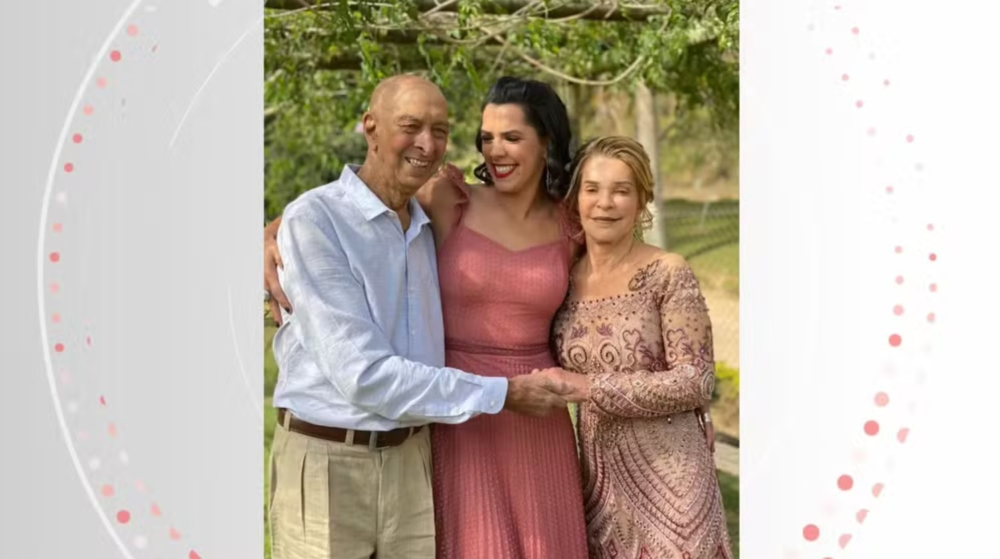
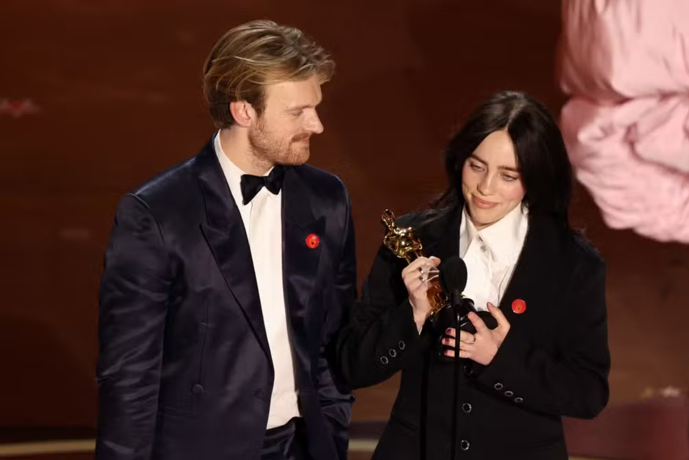

Brasileira é selecionada para Festival de Cannes com filme sobre câncer do pai
O Festival de Cannes, na França, é um dos mais renomados na indústria do cinema. E neste ano uma
capixaba vai estar sob os holofotes com um curta-metragem que conta a história emocionante da luta
do próprio pai contra um câncer. A diretora e atriz Liza Gomes, nascida em Iúna, no Sul do
Espírito Santo, foi indicada para o festival com o curta "Bodas de Ouro", na categoria Short Film Conner.
Ler mais

Oscar 2024: o que são os pins vermelhos usados por artistas como Billie Eilish e Mark Ruffalo na cerimônia
Billie Eilish, Mark Ruffalo, Ramy Youssef e a diretora Ava DuVernay estão entre os artistas
que chegaram ao tapete vermelho do Oscar, na noite deste domingo (10), com pins vermelhos
do movimento que pede cessar-fogo na Faixa de Gaza.
Ler mais
Robert Downey Jr. vence seu primeiro Oscar 31 anos após indicação de estreia
Robert Downey Jr. venceu seu primeiro Oscar, na noite deste domingo (10). O ator foi o
ganhador da categoria de Melhor ator Coadjuvante por seu trabalho em "Oppenheimer".
Ler mais
'Duna: Parte 2' é a melhor saga espacial dos últimos anos
"Duna: Parte 2" é tudo o que uma ficção científica deveria ser. A conclusão do épico
espacial iniciado em 2021 estreia nesta quinta-feira (29) nos cinemas brasileiros como o
encontro perfeito de ação grandiosa e uma discussão relevante sobre temas complexos como
fanatismo religioso e fascismo.
Ler mais